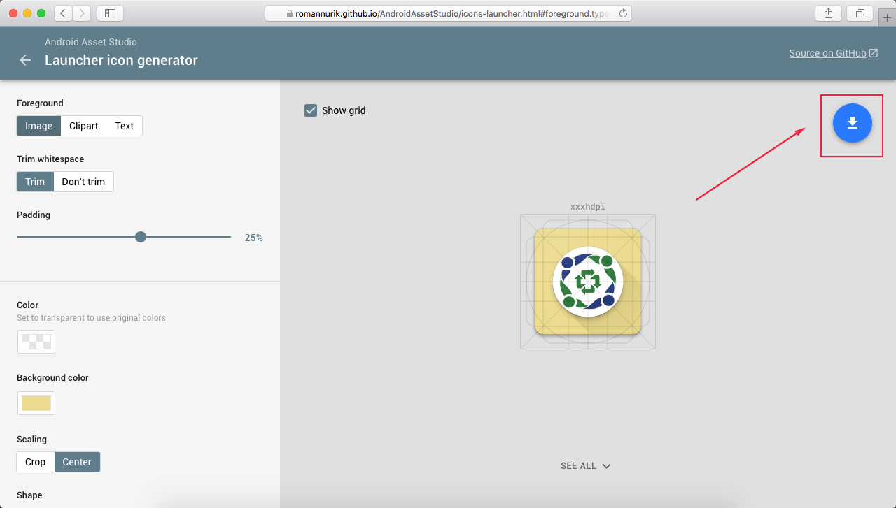

Membuat Icon Menu
Di Aplikasi Android OtomaX, sebenarnya membuat Icon untuk menu bukan suatu keharusan, sebab telah disediakan Icon Menu default klik disini yang dapat langsung digunakan oleh pengguna tanpa perlu membuat dahulu. Pun begitu, bagi pengguna yang ingin mengubahnya dengan gambar Icon lain sesuai kreatifitasnya juga dimungkinkan. Jadi, membuat Icon Menu merupakan opsional, tergantung kepada masing - masing pengguna. Gimana sih membuat Icon Menu Itu?…
Bagi yang kurang mengerti tentang desain grafis dan ingin membuat Icon Menu berikut ini contoh cara sederhana membuatnya:
-
Cari gambar calon Icon yang Anda inginkan di Google Images, sebagai contoh kita akan membuat Icon BPJS, klik disini. Kemudian download dan simpan di komputer Anda.

- Kunjungi website pembuat Icon untuk Aplikasi Android klik disini.
-
Klik Image, lalu cari gambar BPJS yang telah Anda download di komputer.
Gambar BPJS akan muncul seperti tampak di gambar bawah ini:
Jika ingin membuat Icon menu berbentuk lingkaran atau bundar, pada Shape pilih Circle, perhatikan gambar di bawah ini:
-
Klik tanda download di website, dan simpan file yang didownload di komputer Anda. Perhatikan gambar di bawah ini:

- Extract file hasil download dan cari folder bernama res -> folder mipmap-hdpi -> gambar. Nah gambar inilah hasil pembuatan Icon Menu BPJS.
- Selesai. Selanjutnya upload gambar tersebut ke hosting klik disini.
Khusus bagi yang mempunyai jiwa seni dan keahlian desain grafis, dapat menggambar Icon Menu dari nol menggunakan Aplikasi Web gratis tanpa perlu download dan install di komputer klik disini, serta tersedia panduan penggunaan dasar klik disini. Selain itu, Aplikasi tersebut juga dapat digunakan untuk menggambar banner.
Tertarik ingin mempraktekkannya namun belum mempunyai Aplikasi Android OtomaX, pesan sekarang juga sebelum ketinggalan klik disini.